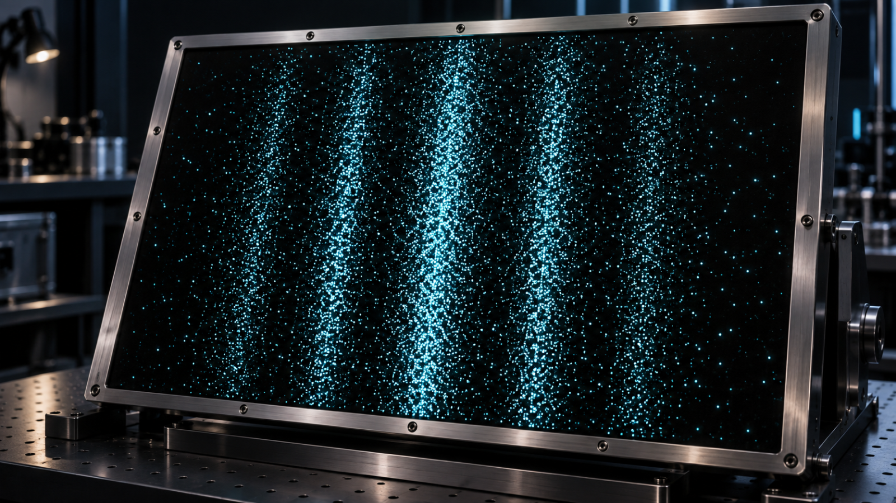
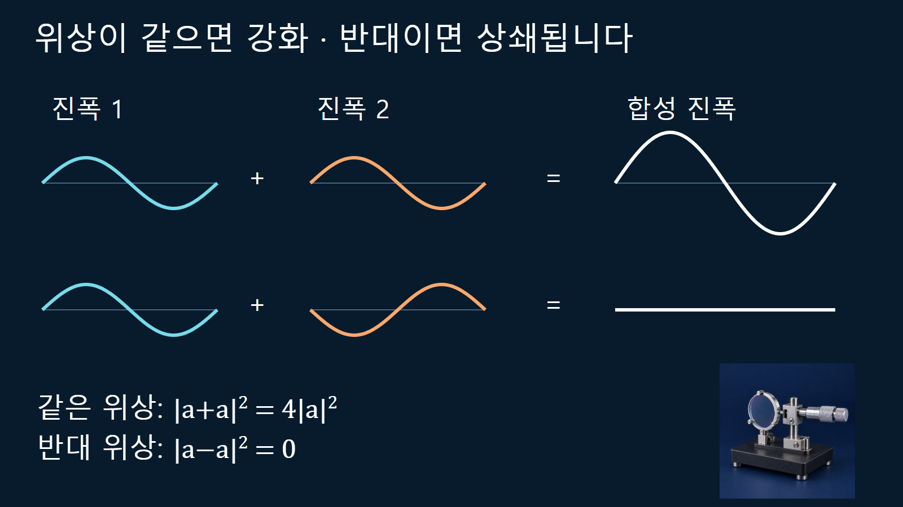
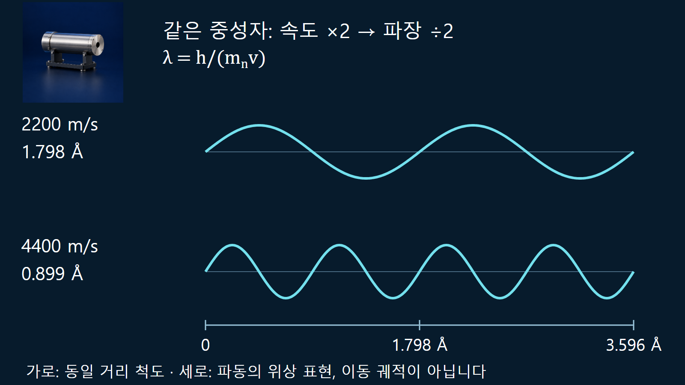

원자와 원자핵의 기초 · 019
파동-입자 이중성
입자 하나의 검출과 많은 입자의 간섭무늬를 함께 설명하는 양자적 성질

전자나 중성자는 검출기에서 개별 사건으로 기록되지만, 여러 사건의 분포에는 회절과 간섭이 나타날 수 있습니다. 이를 입자성과 파동성이라고 부릅니다. 물질이 상황마다 작은 공에서 물결로 바뀐다는 설명보다, 양자상태의 확률진폭과 실제 검출 사건을 구분하는 편이 정확합니다.
한 점의 검출과 전체 분포는 다른 정보입니다
위치에 민감한 검출기는 한 전자의 도착을 국소적인 신호로 기록합니다. 그러나 전자를 차례로 보낸 뒤 점들을 누적하면 공간적으로 밝고 어두운 간섭 띠가 나타날 수 있습니다. Hitachi가 공개한 단일전자 실험은 전자선 바이프리즘을 이용해 이 누적 과정을 보여 줍니다. 실제 장치는 교과서의 두 구멍 판과 같지 않지만 두 경로의 진폭이 중첩된다는 학습 목적은 같습니다. 한 점만으로는 무늬를 판정할 수 없고 많은 사건의 통계가 필요합니다.
더하는 것은 확률보다 먼저 진폭입니다
두 구별되지 않는 경로의 확률진폭을 ψ1, ψ2라 하면 검출확률밀도는 |ψ1+ψ2|2에 비례합니다. 전개하면 각 경로의 확률 항에 더해 위상에 따라 양수 또는 음수가 되는 간섭 항이 나타납니다. 그래서 단순히 두 확률을 더한 무늬와 달라집니다. 경로를 구별하는 정보가 환경이나 측정장치에 남으면 결맞음이 약해져 간섭 대비가 줄어들 수 있습니다. 인간이 화면을 의식적으로 바라보는 행위가 특별한 물리 조건이라는 뜻은 아닙니다.
계산 예시로 특정 검출 위치에서 두 진폭의 크기가 같은 a라고 가정합니다. 위상이 같으면 |a+a|2=4|a|2이고, 위상이 반대이면 |a−a|2=0입니다. 이는 그 위치의 상대 세기 예시입니다. 전체 공간에 걸친 확률은 정규화해야 하므로 어떤 곳의 세기가 커졌다고 전자가 새로 생겼다는 뜻은 아닙니다. 밝은 부분과 어두운 부분은 확률이 재분배된 결과입니다.

드브로이 파장은 입자의 지름이 아닙니다
운동량 p를 가진 입자와 연관되는 파장은 λ=h/p입니다. h는 플랑크상수이며, 운동량이 커지면 파장은 짧아집니다. 이 파장은 전자나 중성자의 표면 크기가 아니라 상태의 공간적 위상 변화 척도입니다. λ가 실험 구조의 간격과 비슷해지면 회절·간섭을 관측하는 데 적합한 조건이 될 수 있습니다. 단색에 가까운 입사빔과 적절한 결맞음, 검출 분해능도 필요하므로 파장 하나만 맞으면 모든 실험에서 선명한 무늬가 생긴다고 보장하지는 않습니다.
2200 m/s 중성자의 파장을 계산합니다
비상대론적 중성자에서는 p=mnv를 사용합니다. h=6.62607015×10−34 J·s, mn≈1.67493×10−27 kg, v=2200 m/s를 대입하면 운동량은 약 3.6848×10−24 kg·m/s이고 파장은 약 1.798×10−10 m입니다. 즉 0.1798 nm 또는 1.798 Å입니다. NIST가 열중성자 단면적의 기준으로 사용하는 2200 m/s, 25.3 meV, 1.798 Å의 대응과 일치합니다. 여기서 열중성자 모두가 정확히 한 속도만 갖는다고 해석해서는 안 됩니다.
같은 중성자의 속도를 4400 m/s로 두 배 높이면 파장은 약 0.899 Å로 절반이 됩니다. 운동에너지는 mv2/2에 비례하므로 약 101 meV로 네 배가 됩니다. 따라서 속도를 두 배로 하는 것과 에너지를 두 배로 하는 것은 서로 다른 비교입니다. 에너지로 계산할 때에는 λ=h/√(2mnE)를 사용하며, 이 E는 정지질량에너지를 포함한 총에너지가 아니라 운동에너지입니다.

광자와 질량 있는 입자에 같은 근사를 쓰지 않습니다
λ=h/p는 광자에도 적용되지만 광자에서는 p=E/c이므로 λ=hc/E가 됩니다. 질량이 있는 느린 입자에 사용하는 p=mv와 E=mv2/2를 광자에 적용하지 않습니다. 빠른 전자의 운동량도 상대론 관계로 구해야 합니다. 같은 에너지라는 말만으로 전자·중성자·광자의 파장을 같다고 비교하면 질량과 에너지 정의의 차이를 놓칩니다.
| 대상·조건 | 운동량과 파장 | 에너지의 의미 |
|---|---|---|
| 느린 중성자 | p≈mv, λ=h/p | E≈mv²/2는 운동에너지입니다 |
| 상대론적 입자 | pc=√(E총2−m2c4) | 총에너지와 정지질량을 함께 씁니다 |
| 광자 | p=E/c, λ=hc/E | E=hν이며 정지질량은 0입니다 |
원자력 분야에서 파장을 쓰는 장면
느린 중성자의 파장은 원자 간격과 비교할 수 있어 결정 구조와 물질 내 상관관계를 조사하는 중성자 산란에 이용됩니다. 원자로에서 중성자가 물질과 상호작용하는 확률도 근본적으로 양자 산란에 연결됩니다. 다만 실제 수송 계산은 모든 중성자의 파동을 직접 그리는 방식만 사용하는 것이 아니라 평가 단면적과 통계적 수송 모형을 사용합니다. 파동성이 있다는 사실과 어떤 계산 수준이 실무에 적합한지는 별도의 판단입니다.
그림의 물결을 입자의 여행 경로로 읽지 않습니다
사인 곡선 그림은 위상이나 진폭을 시각화한 것이며 중성자가 위아래로 뱀처럼 이동한다는 궤적이 아닙니다. 물질파가 반드시 물이나 공기 같은 매질의 진동을 요구하는 것도 아닙니다. 파동함수 자체와 그 절댓값 제곱인 확률밀도는 다릅니다. 실험 장치가 무엇을 준비하고 어떤 정보를 검출하는지를 함께 적어야 그림이 전달하는 물리량이 분명해집니다.
검출 사건과 예측 규칙을 함께 기억합니다
하나씩 기록되는 검출 사건은 입자성을, 누적 분포의 간섭은 파동적 진폭의 중첩을 보여 줍니다. 드브로이 관계는 운동량에서 공간 척도를 구하는 도구이며, 그 값은 입자 반지름을 대신하지 않습니다. 계산에서는 먼저 대상 입자와 에너지 정의를 정하고 운동량을 구한 뒤 λ=h/p를 적용합니다. 그러면 속도·에너지·파장의 변화를 일관되게 비교할 수 있습니다.